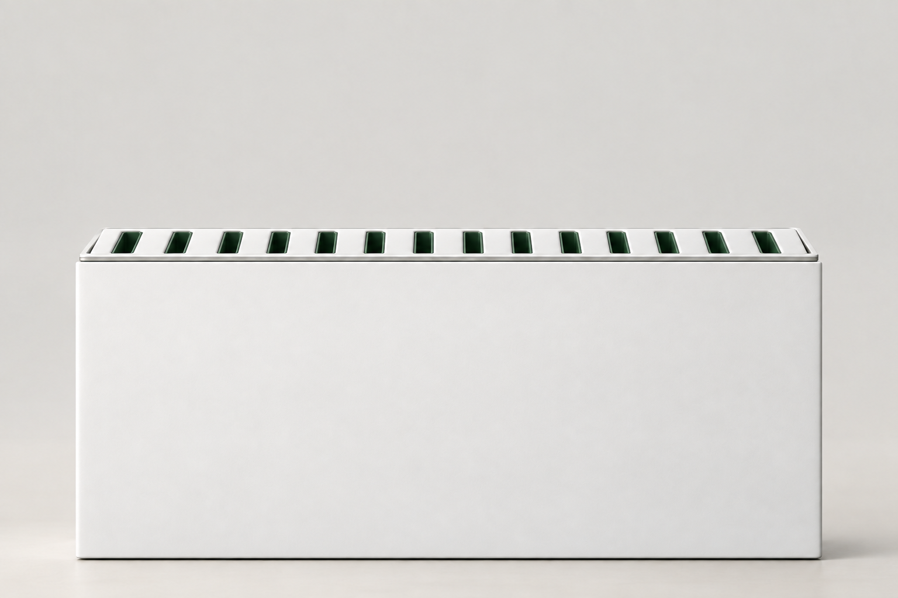

用户知道结果，却不知道应该升高还是降低，也不知道还差多少。
FLOW KEY｜音浪柱
让声音，
被看见。
AI 量化音高，实体回应声音。
让音乐学习，多一份理解、趣味与陪伴。
15根独立升降柱声音输入后形成实体地形
本地 AI实时理解音准偏差低延迟，不依赖云端
概念渲染｜基于团队结构模型
西客松 XiHack2026 AI 硬件创新赛道
01｜用户问题
儿童音乐启蒙，也需要看得见的反馈
“再高一点”有多高？
孩子需要看得见的答案。
孩子听到了音名，
却还没理解高与低。
却还没理解高与低。
Do、Re、Mi 能跟着唱，音高差异却仍然抽象。
学习者知道不对，
却不知道如何调整。
场景示意｜用户提供素材，非用户调研或产品实拍却不知道如何调整。
听觉模仿需要明确的方向和可量化的反馈。
Re92%
音高略低，再稍微提高一点。
数字告诉你“差多少”，柱子的高度让你直接看见“正在接近”。
产品定位学一点，玩一下。
学一点，玩一下。
让声音有个回应。
以儿童音高量化教学为核心切入点，探索 AI 半教跟随：把教育、娱乐与陪伴结合，让练习更愿意持续。
亮珠交互作为后续形象与趣味设计方向，用可见的回应降低单纯教学的枯燥感。
当前为 15 柱技术原型；半教跟随、陪伴体验和亮珠方案属于待验证的交互方向。现场素材 · 演示顺序 01
先听一段“采访”。
听见真实发声，再理解学习者为什么需要音高反馈。
02｜商业价值与落地路径
从核心学习场景，走向可复制的产品
从可运行原型，到可复制的 AI 声音交互硬件
不止能演示，
不止能演示，
更要能够落地。
当前 15 柱产品，首先验证声音采集、识别与分析、音准匹配、舵机控制到实体反馈的完整闭环。
下一步，复用底层架构，让不同的学习任务拥有适合自己的产品形态。
为什么选择音乐学习？理解声音，
理解声音，
也是培养审美。
- 01 · 政策背景
美育融入素质教育
学校美育浸润行动强调艺术实践与审美素养，音乐教育是美育的组成部分。
依据：教育部美育浸润行动通知 ↗ - 02 · 团队趋势判断
AI 时代，更重视创造力
工具能力提升后，团队认为审美、表达与创造力会成为更值得长期培养的能力。
- 03 · 团队场景判断
音乐也是一种闲暇体验
学习音乐不只为了考核，也可以服务日常兴趣、陪伴与精神需求。
真实采购 · 当前原型一台 FLOW KEY 原型，
未列项目不计入本次统计，不推导售价或利润率。
一台 FLOW KEY 原型，
需要多少钱？
¥264.55
当前已统计原型材料成本
以上为当前原型已统计材料采购成本，不等同于最终量产 BOM、制造成本或产品零售价。
依据：团队提供的八项采购数据未列项目不计入本次统计，不推导售价或利润率。
原型材料采购清单8 项 · 人民币
| 硬件 / 材料 | 采购成本 |
|---|---|
| 当前已统计合计 | ¥264.55 |
金额为所列项目的采购总额，非单个器件单价。舵机采购项的具体数量与单价，以采购记录为准。
进一步降本的路径先看结构，
先看结构，
再谈规模。
当前是比赛阶段的小批量原型。降本空间来自具体工程路径，仍需通过供应链和制造验证。
- 标准化器件
ESP32-S3、PCA9685、MG90S 等成熟可采购器件，减少对特殊执行器的依赖。
- 软件复用
音高识别、音准计算、AI 降噪、声音映射与运动控制架构，可跨产品复用。
- 模块化硬件
声音输入、计算、驱动、运动与结构相互解耦，无需为每种产品重做整套系统。
- 按任务调整规格
并非所有场景都需要 15 柱。三柱声调方向可减少执行器、材料、电源需求与产品体积。
- 产品化与批量优化
探索 PCB 集成、结构优化、集中采购与生产工艺改进；具体降本幅度待验证。
团队降本目标 · 非已验证量产报价原型之后，
原型之后，
成本怎样往下走？
当前 15 个舵机独立控制，3D 打印结构的摩擦与非定制机械方案，是团队识别的优化重点。
探索开模与机械结构优化，争取将成本控制在 150 元以内。
依赖结构、芯片、驱动与采购规模的共同优化，尚无完整量产 BOM 或供应商报价支撑。
- 芯片选型
- 团队沟通口径：当前芯片约 ¥22，批量定制目标约 ¥8；需确认型号、数量、功能与供应商报价。该口径不替代 BOM 中 ¥37.40 的开发板采购项。
- 执行器效率
- 探索单舵机驱动两个单元，减少执行器用量；独立控制能力、行程、负载与稳定性需要重新验证。
- 落地验证
- 补齐量产 BOM、模具与装配成本、质量测试、采购报价与试产结果后，才能确认最终成本。
团队据此判断产品具有市场化可能性；此处呈现工程假设与目标，不作为已实现成本、售价或利润率。
我们不是只做这一台 15 柱装置一个技术底座，
一个技术底座，
多种产品形态。
从轻量单一任务，到专业教学与大型空间。选择一个方向，查看它服务谁、需要改变什么。
FLOW KEY EDU
把“再高一点、再低一点”，变成学生看得见的反馈。
概念渲染｜当前原型方向，非量产产品
第一声 · 平：保持相对稳定的高位走势
三根示意柱共同呈现发音前、中、后段的轮廓，不是一柱一声调。图为概念映射示意，非实时识别结果或实体原型。
- 目标用户
- 产品特点
- 商业方向
统一技术底座
FLOW KEY CORE
声音采集 → 本地计算 → 声音识别 → 特征映射 → 舵机控制 → 实体反馈
当前音乐链路已验证；声调分析等新任务需配置并验证各自的模型与映射规则。Tone · 产品规划不只是听老师说
不只是听老师说
“第二声要往上”。
而是亲眼看见自己的声音
有没有“往上”。
听到发音 → 识别声调 → 看见走势 → 调整发音
音乐音准 → 语言声调计划比较实际与标准声调轨迹，让学习者理解哪里偏高、哪里偏低、走势是否正确。
四声示例仅限普通话；第三声示意为单字完整走势，连读变化需另设规则。粤语、民族语言与地方方言需使用各自的声调模型。
换的是产品形态，
复用的是技术底座。
按任务改变
识别模型 / 算法
声音特征与映射规则
柱体数量、结构与尺寸
软件功能、教学内容与 UI
可以继续复用
ESP32 控制逻辑与麦克风采集
数据处理架构与舵机驱动
前端可视化与设备通信
实体交互框架
输入 → 识别分析 → 数据映射 → 运动控制 → 实体表现。复用架构降低重复开发，具体语言识别与机械规格仍需独立验证。
发展计划 · 尚非合作订单FLOW KEY
FLOW KEY
怎么走向市场？
消费级硬件
面向语言学习者、音乐学习者与家庭用户。
教育解决方案
硬件 + 教学软件 + 教学内容，服务学校、音乐机构与教师。辅助教师，不替代教师。
商业定制
面向展览、品牌活动、科技馆与艺术商业空间，提供定制声音交互方案。
开放交互能力
规划 API、SDK 与设备控制接口，供开发者、音乐人、教师和艺术家定义声音与物理反馈的关系。
03｜工作原理
声音如何变成柱子的运动？
从发声到运动，
每一步都看得懂。
主要声音处理与 AI 判断在本地完成，再把分析结果转换为统一的柱体高度。
01用户发声
→
02麦克风采集
→
03AI 降噪
→
04音高识别
→
05匹配计算
→
06舵机控制
→
07柱子升降
04｜为什么不只做一个应用？
声音很抽象。
声音很抽象。
物理变化更容易理解。
传统软件通过数字、波形或指针告诉用户结果。FLOW KEY 把偏差转换为真实高度，不需要先理解复杂乐理。
看见柱子，就能看见自己的声音。01听见
→
唱出声音
02看见
→
柱子变化
03理解
调整音准
05｜本地 AI
AI 在设备内部完成判断
更低延迟，
更适合真实互动。
降低对网络的依赖，也让原始声音数据尽量留在本地。
提取基频并映射十二音级
减少环境噪声对判断的干扰
用指令开始、停止或重新测试
把相邻音比例转换为柱体高度
语音控制演示“开始检测”
等待指令
06｜硬件结构
15 根独立升降柱
十二音级，
三根辅助柱，
共同形成连续地形。
12音高反馈柱
对应十二平均律的十二个音级
3辅助动态柱
跟随附近主音柱，最大高度受限
15独立控制通道
舵机缓慢升降，不模拟频谱跳动
07｜未来发展路径
先产品化，再复制到更多场景
从 15 根音浪柱，
到 3 根声调柱。
改变的是产品形态，不变的是“让抽象声音变得可见”的核心能力。
- 当前01
EDU 原型
音高识别、音准匹配、教学模式、舵机控制与实体反馈，验证技术闭环。
- 下一步02
产品化
优化结构稳定性、舵机噪声、工业设计、体积、成本与交互体验。
- 横向扩展03
Tone / Mini
开发轻量形态，验证语言学习与家庭音乐学习需求。
- 场景扩展04
教育与空间
逐步验证学校、培训机构、科技馆与互动展览的使用场景。
- 长期规划05
CORE 平台
统一声音理解与物理反馈能力，开放接口，支持更多产品与创作者。
FLOW KEY｜音浪柱
让声音从「听见」，
走向「看见」，
再走向「理解」。
AI × 声音 × 实体交互
08｜现场体验
唱一个音，
唱一个音，
看见自己差多少。
选择目标音后发声，查看相邻音级比例与柱体反馈。网页使用限速平滑动画示意机械运动。

概念渲染｜基于团队模型舵机待机
12 根音高反馈柱
3 根辅助动态柱
单次完整行程约 1.4 秒
演示路径：选择目标音 → 开始 → 发声 → 查看匹配度 → 根据建议调整